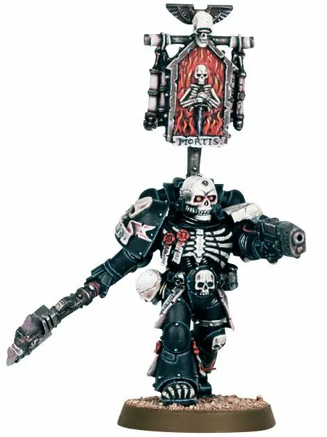
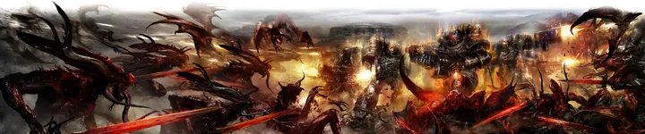

01ภาพรวม

นักรบในเกราะดำลุกเป็นไฟ ปรากฏตัวจากความว่างเปล่าในยามที่ทุกอย่างสิ้นหวัง แล้วหายไปโดยไม่พูดสักคำ
02ต้นกำเนิด
ไม่มีใครรู้ที่มาแน่ชัด ทฤษฎีที่ได้รับการยอมรับมากที่สุดคือ Fire Hawks Chapter จาก Cursed Founding (Founding ครั้งที่ 21) ที่ยานหายเข้าไปใน Warp และติดโรคจาก Warp จนเนื้อหนังเน่าเปื่อยแต่ไม่ตาย ผู้รอดชีวิตราว 200 คนกลายเป็นนักรบที่เดินทางผ่าน Warp และปรากฏตัวช่วยจักรวรรดิ
03เนื้อเรื่องเจาะลึก
ผู้ช่วยในยามสิ้นหวัง
เมื่อกองกำลังของจักรวรรดิกำลังจะแพ้ นักรบในชุดเกราะดำที่ทาลายกระดูกและเปลวไฟจะปรากฏตัวขึ้นอย่างเงียบเชียบ รบอย่างไม่หวั่นเกรงด้วยอาวุธที่ลุกเป็นไฟ Warp จนศัตรูแตกพ่าย แล้วหายไปในหมอกหรือความมืด ไม่มีใครเคยได้พูดคุยกับพวกเขา
ร่างที่ลุกไหม้
ภายใต้เกราะ ร่างของพวกเขาเปื่อยจนเห็นกระดูก และลุกเป็นไฟตลอดเวลา แต่ไม่ถูกเผาไหม้ — คำสาปที่พวกเขาดูเหมือนจะใช้เป็นพลังเพื่อไถ่บาป
Chapter ทั้งหลายเคารพ
Space Marine ที่เคยได้รับความช่วยเหลือเล่าเรื่องนี้เหมือนตำนาน บาง Chapter มองว่าเป็นสัญญาณว่าจักรพรรดิยังเฝ้าดูอยู่ แต่ Inquisition บางกลุ่มก็สงสัยว่าพวกเขาอาจเป็นสิ่งที่เกี่ยวข้องกับ Warp
04นิสัยและวัฒนธรรม
- ไม่พูด ไม่สื่อสาร ไม่รับคำสั่ง
- เกราะดำลายกระดูกและเปลวไฟ
- ไม่เคยถูกจับหรือพบศพ
05จุดที่น่าสนใจ
- ปรากฏในนิยาย Legion of the Damned โดย Rob Sanders
- มีโมเดลในเกมทั้งยุค 40K และ Horus Heresy
- อาวุธไฟ Warp ที่ไม่สนใจที่กำบัง
06ความสามารถพิเศษ
สิ่งที่ทำให้ Legion of the Damned แตกต่างจากทัพอื่น — ทั้งพลังที่ติดตัวมาทั้งเผ่า/ทัพ และความสามารถของบุคคลสำคัญ
ของทั้งเผ่า/ทัพ

ปรากฏจากความว่างเปล่า
ไม่มีบันทึกการเดินทางด้วยยานหรือ Drop Pod ปรากฏตัวขึ้นตรงกลางสนามรบเหมือนเดินออกมาจาก Warp
ไฟที่ไม่ใช่ไฟธรรมดา
อาวุธและร่างกายลุกด้วยไฟที่เผาไหม้วิญญาณ ศัตรูหลบหลังกำแพงก็ไม่รอด
ไม่รู้จักความกลัวและความเจ็บ
รบต่อแม้ร่างกายถูกทำลายจนไม่ควรเคลื่อนไหวได้
07วีรกรรมและเหตุการณ์สำคัญ
Fire Hawks หายไป
Chapter จาก Cursed Founding หายเข้าไปใน Warp
ตำนานแพร่หลาย
มีรายงานการปรากฏตัวช่วยจักรวรรดิในหลายสงคราม
08ยุค 40K — สหัสวรรษที่ 41
ในยุค 40K Legion of the Damned เป็นตำนานที่เล่ากันในหมู่ทหาร ไม่มีใครรู้ว่าจะปรากฏที่ไหนหรือเมื่อไร
09เนื้อเรื่องล่าสุด (Era Indomitus / M42)
หลัง Great Rift มีรายงานการปรากฏตัวบ่อยขึ้นในเขตที่ถูกตัดขาด บางคนเชื่อว่าเป็นเพราะ Warp รั่วไหลไปทั่วกาแล็กซี
10แกลเลอรี
